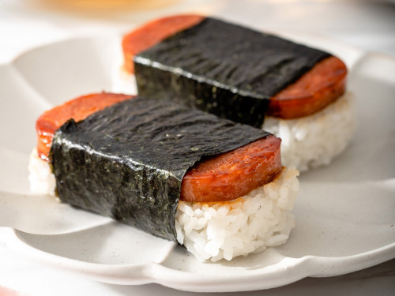

Spam Musubi

A canned delight!
Yes, really. I mean that. To those who haven't tried it before, spam is hardly an appealing prospect; Its canned meat, looks pale, and has a name commonly associated with unwanted messages nowadays. But hear me out:
Just try it.
I promise you, its pretty good.
Ingredient List
- One can of spam musubi
- Six cups of cooked sushi rice
- 1/4 cup soy sauce
- 1/4 cup mirin
- 1/2 cup sugar
- Nori roasted seaweed, cut into thirds
Recipe Steps
- Cut the spam into four to eight even slices lengthwise, depending on how thick you want it to be.
- Set a medium sized, non stick pan to medium heat. Add 1 tsp of olive oil.
- Add the spam to the pan for about three minutes, flipping until both sides are slightly golden.
- Remove the spam from the pan, placing on paper towers to drain the oil. Clean the pan.
- Set the pan on high heat. Add the soy sauce, mirin, and sugar to the pan, and once its all mixed through and begins to simmer, turn the heat low.
- Re-add the spam. Turn to coat, and once coated, remove from the heat.
- Using either the spam can, or a musubi mold, fill the mold with about an inch of rice on a strip of nori. Remember to keep the mold wet with water to prevent sticking!
- Remove the mold, set a slice of spam on top, and wrap the nori around. The nori can be sealed with a droplet of water if needed.
Back to Home Page